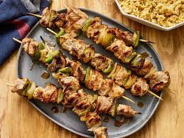
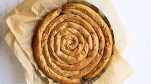

Explore Greece's Top 5 Culinary Delights
Indulge in the best of Greek cuisine with our top 5 recommendations. Click on each dish to discover more!





Indulge in the best of Greek cuisine with our top 5 recommendations. Click on each dish to discover more!